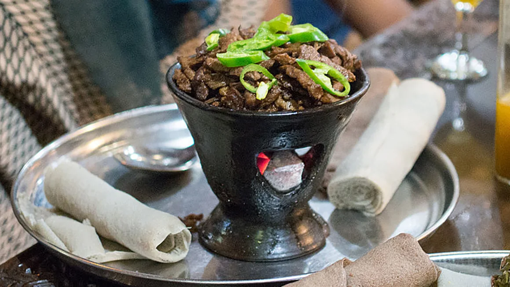

Shekla TBS

Description
Shekla Tibs is a traditional Ethiopian dish made from succulent pieces of meat (often beef or lamb) sautéed with
onions, tomatoes, and a blend of spices. It is typically served in a clay dish that keeps the food warm, and
it’s
often enjoyed with injera, a spongy flatbread.
Ingredients
- 1 pound beef or lamb, cut into bite-sized pieces
- 2 tablespoons vegetable oil
- 1 large onion, sliced
- 2 tomatoes, chopped
- 2 cloves garlic, minced
- 1 tablespoon berbere spice mix
- 1 teaspoon ground ginger
- Salt and pepper to taste
- Injera, for serving
Steps
- Heat the vegetable oil in a large skillet over medium-high heat.
- Add the sliced onion and sauté until it begins to soften, about 3-4 minutes.
- Add the minced garlic and cook for another minute.
- Add the beef or lamb pieces to the skillet and cook until browned on all sides.
- Stir in the chopped tomatoes, berbere spice mix, ground ginger, salt, and pepper.
- Reduce the heat to medium and let the mixture simmer for about 15-20 minutes, until the meat is cooked
through
and the flavors are well combined.
- Serve hot, ideally in a clay dish, accompanied by injera.